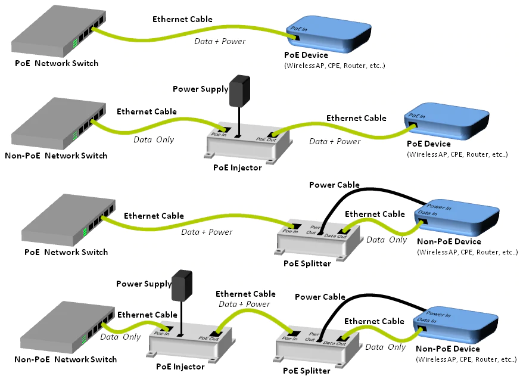

PoE is a way to send electrical power to a device via ethernet (via CAT cabling and RJ45 connectors).
Active versus Passive PoE
Active performs a hand-shake before sending power to the device. The hand-shake ensures that the device is able to handle the power current that will be sent to it.
Passive PoE doesn’t perform a handsake or really do anything. It just takes power from some power-supply and feeds it over the cable and into the device without trying to control it. Thus it’s called ‘passive’.
See Netgear Blog on Active v Passive PoE (Internet Archive)
Active PoE uses DC (direct-current). Whereas passive PoE is agnostic. Passive
“send[s] raw unnegotiated energy down ethernet cables to connected devices. The device connected to that cable will receive the electricity, whether it is able to handle it or not. This is why Passive PoE is dubbed as “Always ON.””
(from)
Injectors and Splitters
You can get active or passive injectors splitters. They allow you to inject current into ethernet. This provides an alternative way to input power to the ethernet cable instead of using routing switches with PoE built-in.
Likewise, a splitter provides a way to take PoE current out of a cable without needing the device to have an in-built PoE module.
For example, the Convexa B1300 router does not have PoE as standard. However, you can buy a version of the router with a PoE module soldered onto the board. This means the ethernet RJ45 connector can take electricity to power the device rather than using the normal external power supply.
Instead of using the PoE module, you use a splitter. The splitter will either need to be a passive or active splitter depending on the power source. An active spliter will need to be able to meet the IEEE 802.3af 15.4W or IEEE802.3at 24W standards. (E.g. something like TP Link POE10R splitter) A passive splitter doesn’t care about those standards (e.g. one of these internet archive version). Instead it just feeds whatever input power it recieves to the device.
The power injector can be active or passive. A pasive injector typically lets you plug the devices power supply into it, and then feeds the power along the ethernet cable, with a splitter taking the power-off just before the device-under-power gets the cable. The splitter also being passive then plugs into the device. An active injector, something like the TP-LINK 802.3af Gigabit PoE Injector is typically more expensive but speaks the active standard.
Four standards of Active PoE
IEEE define four different levels of PoE standard. Each newer standard increased the amount of electricity that PoE could carry.
Wiki contains a table noting the different standard implementations of PoE.
The standards are:
| Property | 802.3af (802.3at Type 1) “PoE” | 802.3at Type 2 “PoE+” | 802.3bt Type 3 “4PPoE”[26]/“PoE++” | 802.3bt Type 4 “4PPoE”/“PoE++” |
|---|---|---|---|---|
| Power out at Receiver | 12.95 W | 25.50 W | 51 W | 71 W |
| hi | |
|---|---|
| a | c |
| b | d |
More links:
Cable Academy has a good diagram of the different types of POE setups:
